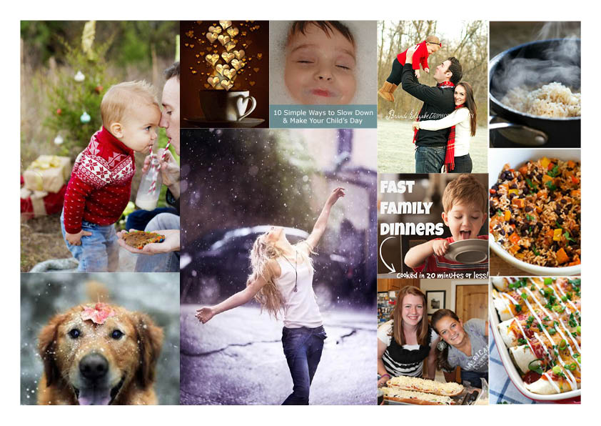

Kitchen Collab is a mobile service based on an iPhone app aiming to help busy people to cook at home more often in a time and money saving way. The Kitchen Collab app empowers customers to select personalized quick recipes, add additional items, and submit a request to pick up the groceries at a convenient place and time. By having the groceries already packed and paid for, zipping by the store on the way home from work is quick and easy. This is a group project Course HCDE 518 User Centered Design.
Time: 10/2014 - 12/2014
My Role: Research Lead, UX Designer
Team Members: Brenda Weitzer, Jennifer Nerad, Kim Lambert
Methods & Tools: Survey, Interview, Competitive Analysis, Affinity Diagram, Brainstorm, Sketch, Marvel, Usability Test, Photoshop
Design Question: How can we help people who want to cook at home more often than they currently do?
Research
(View Full Research Report)
Methods
Through the research phase, we triangulated three research methods to find out the motivation and limitation for cooking home more often and generate design requirements.
- Survey - We designed an online survey and collected data from 127 participants by convenience sampling.
- Interview - We conducted nine interviews with a variety of participants who expressed their willingness to be contacted in the survey. During the interviews, we collected audio data and generated 170 written notes. With the consent of some of our participants, we conducted a guided tour after the interview to garner additional information about cooking habits.
We built an affinity diagram to analyze the qualitative data from interview and open-ended questions in survey.

- Competitive Product Analysis - We looked into apps and websites for cooking and time management (since time is the major limitation according to survey results) as well as menu and delivery services.
Key Findings
- Healthy eating and saving money are the main motivations for people who want to cook at home more often.
- The dominant reason preventing people from cooking more often is “too busy to cook.”
- Easy and fast are the most desired features.
- Planning ahead would help.
Primary Persona
Refined Design Question: How can we help busy people eat healthier and save money by cooking at home more often?

Ideate
Together with my teammates, we brainstormed and sketched 48 ideas. We then narrowed down to three ideas according to our persona and design requirements. We voted and agreed on the final idea.
Prototype
Due to the time limitation, we skipped lo-fi and directly jumped into hi-fi prototype, which we later considered as a mistake, because it took huge effort to make modifications on hi-fi prototype during the 5 iterations.
 Play with our initial interactive prototype
Play with our initial interactive prototype
Evaluate & Iterate
We performed usability test on 5 participants, all of whom finished 3 usability test tasks and answered our follow-up questions. We also prompted them to think aloud during the usability test. Besides empirical evaluation, we also recruited classmates to help us perform cognitive walkthrough. In total, we conducted 5 rounds of iteration.
View Evaluation Report
Visual Redesign
There are still issues unaddressed from the users’ feedback in our final prototype, so I started to redesign the prototype by myself afterwards. Main improvements to be made:
- Refine the information architecture to streamline usability.
- Add the function to view history.
- Visual design should be more aesthetic.
Moodboard Design



{kind=link}
{kind=link}
{kind=link}
{kind=link}
{kind=link}